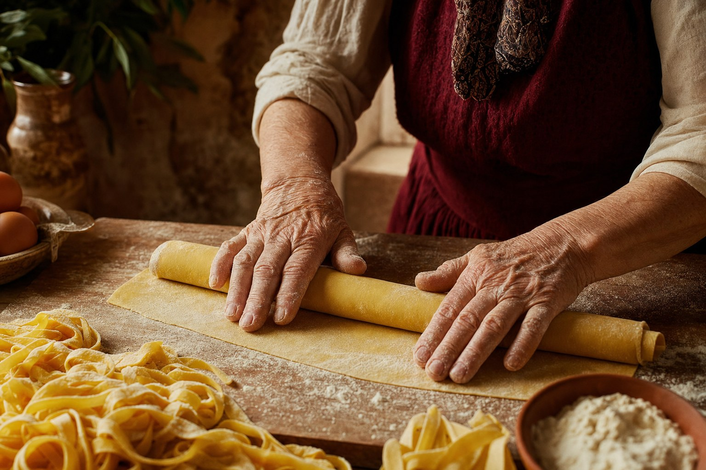
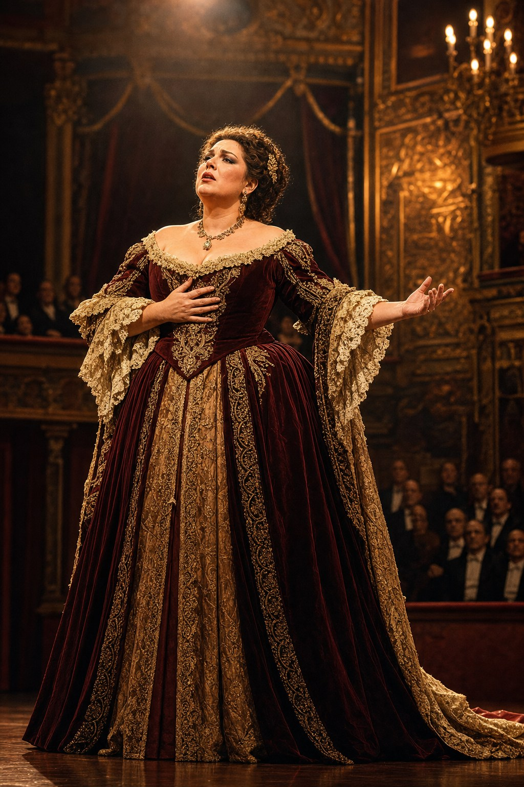

Reading Ferrante in her own city
On teaching L'amica geniale at CI Elementare, from a Florentine classroom, to adults who have only read Ferrante in translation.
Essays from the faculty. Language, culture, teaching, and Italian life, written from Firenze, Roma, Bologna, Milano, Venezia, Napoli and Palermo.

There is a reason the first vocabulary of every Club Italia beginner course is set inside a bar. It is not sentiment. It is the fastest route from silence into speech.
By Marco Rinaldi · Roma · 12 minutes read
Read the essayOn teaching L'amica geniale at CI Elementare, from a Florentine classroom, to adults who have only read Ferrante in translation.

How the imperative and the past participle come alive when a whole class is cooking together on a Wednesday evening.

What five seasons of coaching foreign singers taught me about how English speakers should breathe when they speak Italian.
The awkward middle days of a trip are where most travellers give up on their new Italian. Here is how we prepare for them in class.
On the hardest month of the course ladder, and how we hold students through it, from a study in Naples.
On the Italian I teach from Palermo, and why standard Italian in Sicily is a chosen language, spoken with care.
The eighteen months of hiring, curriculum writing and faculty building that preceded the first live cohort.
Notes from nine years of teaching absolute beginners in the first fifteen minutes of the first class.
On teaching food language from a real kitchen, and why the room behind the teacher is part of the syllabus.

One of the most underrated skills of an adult language teacher, and how I learned it.
One essay a fortnight, in your inbox. Written by the faculty, no marketing.